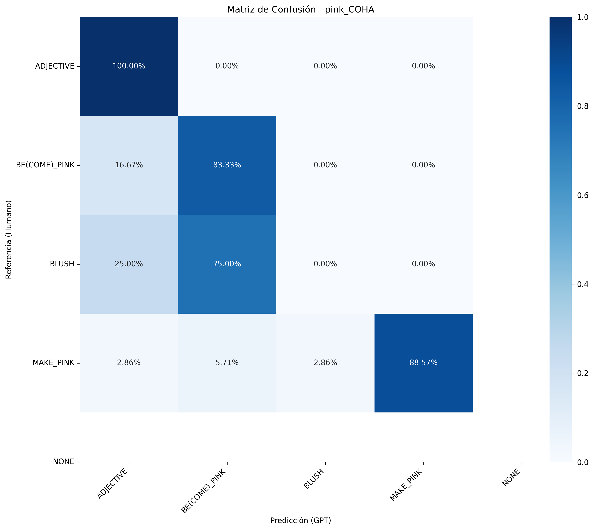
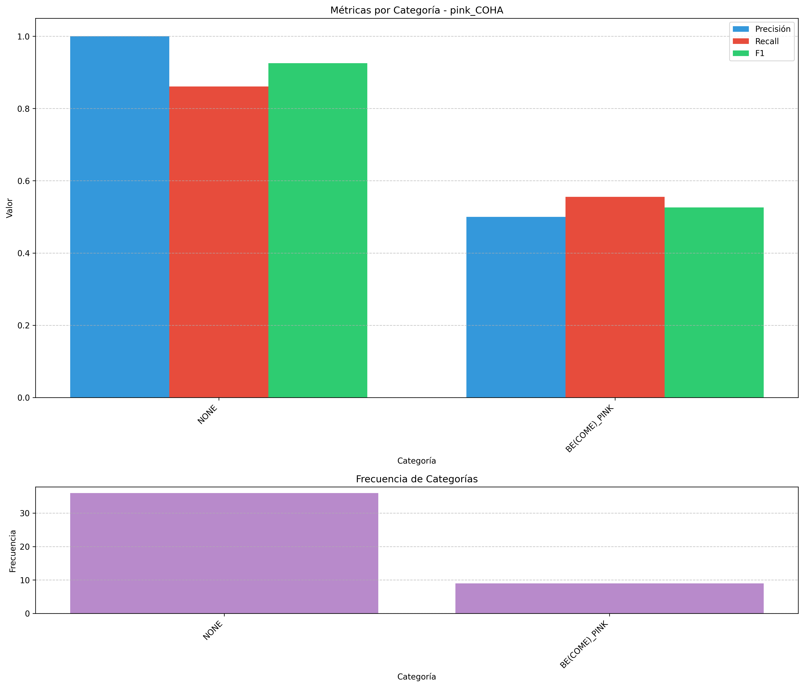

Informe de Evaluación - pink_COHA
Generado el 27/04/2025 13:13:00
Métricas Globales
Accuracy
0.7400
Cohen's Kappa
0.4946
Muestras
50
Imágenes de Análisis
Las siguientes imágenes muestran diferentes aspectos del análisis:
Matriz de Confusión
Distribución de Categorías

Métricas por Categoría
Métricas por Categoría
| Categoría | Muestras | Precisión | Recall | F1 |
|---|---|---|---|---|
| NONE | 36.0 | 1.0000 | 0.8611 | 0.9254 |
| BE(COME)_PINK | 9.0 | 0.5000 | 0.5556 | 0.5263 |
| MAKE_PINK | 4.0 | 0.0000 | 0.0000 | 0.0000 |
| ADJECTIVE | 1.0 | 0.2500 | 1.0000 | 0.4000 |
| BLUSH | 0.0 | 0.0000 | 0.0000 | 0.0000 |
Distribución de Categorías
| Categoría | Humano | GPT | Diferencia |
|---|---|---|---|
| ADJECTIVE | 1 | 4 | 3 |
| BE(COME)_PINK | 9 | 10 | 1 |
| BLUSH | 0 | 4 | 4 |
| MAKE_PINK | 4 | 1 | -3 |
| NONE | 36 | 31 | -5 |
Patrones de Confusión Comunes
| Categoría Humano | Categoría GPT | Frecuencia |
|---|---|---|
| MAKE_PINK | BE(COME)_PINK | 3 |
| BE(COME)_PINK | BLUSH | 3 |
| NONE | BE(COME)_PINK | 2 |
| NONE | BLUSH | 1 |
| NONE | ADJECTIVE | 1 |
| MAKE_PINK | ADJECTIVE | 1 |
| NONE | MAKE_PINK | 1 |
| BE(COME)_PINK | ADJECTIVE | 1 |
Ejemplos de Errores
Ejemplo 1
Texto: malarial valley, where stood the shining towers of Balak; he could see them pinked by the morning sun and low on the horizon. All together he was glad
Categoría Humano: MAKE_PINK
Categoría GPT: BE(COME)_PINK
Ejemplo 2
Texto: time the tiny vessels that lay just under her cheeks expanded in the warmth and pinked her complexion. On occasionhe lifted his hand from the reins to caress her,
Categoría Humano: MAKE_PINK
Categoría GPT: BE(COME)_PINK
Ejemplo 3
Texto: young man, who had appeared silently in the doorway of the bunkhouse. Reddy pinked violently. " I had an accident, Denver, " he explained. "
Categoría Humano: BE(COME)_PINK
Categoría GPT: BLUSH
Ejemplo 4
Texto: " Torchy is going to tell a story. " Course, that gets me pinked up like the candle shades and I shakes my head vigorous. " Hear,
Categoría Humano: BE(COME)_PINK
Categoría GPT: BLUSH
Ejemplo 5
Texto: Sweet Hesper stands and shines, And shines beneath an arc of golden sky, Pinked round with pointed pines. A noble scene! all breadth, deep tone and
Categoría Humano: NONE
Categoría GPT: BE(COME)_PINK
Ejemplo 6
Texto: it flutter up there with the first rumors of evening, and his own heart pinked with the wind. The frail cross of the kite's frame hung as piteously
Categoría Humano: NONE
Categoría GPT: BE(COME)_PINK
Ejemplo 7
Texto: n't lay down an' cry, by cripes, jes' because he gets pinked a little -- " " Aw, that's jest because -- it ain't
Categoría Humano: NONE
Categoría GPT: BLUSH
Ejemplo 8
Texto: at me sort of puzzled, and when I turns to Marjorie she's all pinked up like a strawberry sundae and is smotherin' a giggle with her mesh purse
Categoría Humano: NONE
Categoría GPT: ADJECTIVE
Ejemplo 9
Texto: .' N so'll others. Lotsa others, I betcha! " Blood pinked his thin, sallow flesh and his eyes praised the new world they visioned.
Categoría Humano: MAKE_PINK
Categoría GPT: ADJECTIVE
Ejemplo 10
Texto: with publication of a book written anonymously and titled Washington Merry-Go-Round. The book irreverently pinked prominent capital personages -- Wrong-Horse Harry, the heading of a chapter on Secretary of
Categoría Humano: NONE
Categoría GPT: MAKE_PINK